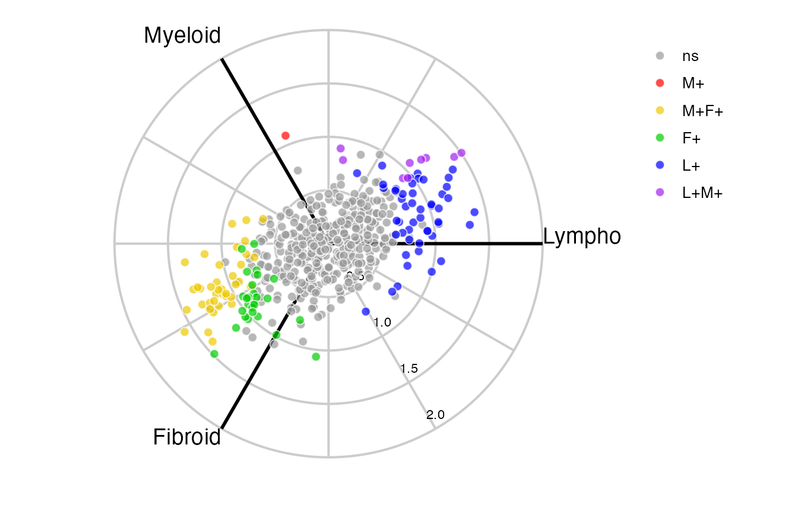

volcano3D 
The volcano3D package enables exploration of probes differentially expressed between three groups. Its main purpose is for the visualisation of differentially expressed genes in a three-dimensional volcano plot. These plots can be converted to interactive visualisations using plotly.
This vignette covers the basic features of the package using a small example data set. To explore more extensive examples and view the interactive radial and volcano plots, see the extended vignette which explores a case study from the PEAC rheumatoid arthritis trial (Pathobiology of Early Arthritis Cohort). The methodology has been published in Lewis, Myles J., et al. Molecular portraits of early rheumatoid arthritis identify clinical and treatment response phenotypes. Cell reports 28.9 (2019): 2455-2470. (DOI: 10.1016/j.celrep.2019.07.091) with an interactive, searchable web tool available at https://peac.hpc.qmul.ac.uk. This was creating as an R Shiny app and deployed to the web using a server.
There are also supplementary vignettes with further information on:
- setting up the input pvalues data frame
- using the volcano3D package to create and deploy a shiny app


Getting Started
Install from CRAN
install.packages("volcano3D")
Install from Github
library(devtools) install_github("KatrionaGoldmann/volcano3D")
Dictionary
Variables used in this vignette:
| Variable | Definition |
|---|---|
| contrast | the variable by which samples can be split into three groups. |
| groups | the three levels/categories of the contrast variable. These should not contain underscores. |
| comparison | two groups between which a statistical test can be performed. There should be three comparisons total. For the examples outlined in this vignette we look at comparisons: ‘lymphoid-myeloid’, ‘lymphoid-fibroid’ and ‘myeloid-fibroid’. |
| p | p value |
| FC | fold change |
| padj | adjusted p value |
| suffix | the tail word in a column name. In this package it states the statistical parameter (e.g. logFC is the log FC variable). |
| prefix | the leading word in a column name. In this package it states the statistical test (e.g. LRT is the likelihood ratio test). |
| polar | A polar coordinates object, of S4 class, containing the expression data, sample data, pvalues and polar coordinates. |
Examples
This vignette uses a subset of the 500 most highly differentially expressed genes from the PEAC data to explore the package functions. This can be loaded using:
data("example_data")
Which contains:
syn_example_rld - the log transformed expression data
syn_example_p - the pvalues data frame containing differential expression statistics about each gene
syn_example_meta which contains information about each sample.
For more information on how to create such objects see here.
Samples in this cohort fall into three pathotype groups:
| Pathotype | Count |
|---|---|
| Fibroid | 16 |
| Lymphoid | 45 |
| Myeloid | 20 |
These will be used as the differential expression groups for the three-way analysis.
Creating Polar Coordinates
First, the differential expression can be mapped to polar coordinates using the polar_coords function, which has inputs:
| Variable | Details |
|---|---|
|
sampledata (required) |
This shows information for each sample in rows and must contain:
|
|
contrast (required) |
The column name in sampledata which contains the three-level factor to be used for contrast |
|
pvalues (required) |
the pvalues data frame which contains the statistical significance of probes between groups. This contains:
|
|
expression (required) |
A data frame or matrix containing the expression data. This is used to calculate z-score and fold change, therefore it should be a normalised expression object such as log transformed or variance stabilised counts. |
| groups |
The groups to be compared (in order). If NULL this defaults to levels(sampledata[, 'contrasts']). These must not contain underscores.
|
| p_col_suffix | The suffix of column names with pvalues (default is ‘pvalue’). This must not contain underscores. |
| padj_col_suffix |
The suffix of column names with adjusted pvalues (default is ‘padj’). This must not contain underscores. If NULL the adjusted pvalue is calculated using p_col_suffix and pvalue_method.
|
| padjust_method | The method to calculate adjusted pvalues if not already provided. Must be one of c(‘holm’, ‘hochberg’, ‘hommel’, ‘bonferroni’, ‘BH’, ‘BY’, ‘fdr’, ‘none’). Default is ‘BH’. |
| fc_col_suffix | The suffix of column names with log(fold change) values (default is ‘logFC’). This must not contain underscores. |
| multi_group_prefix | The prefix for columns containing statistics for a multi-group test (this is typically a likelihood ratio test or ANOVA). Default is NULL. This must not contain underscores. |
| label_column | A column name in pvalues which is to be used to label markers of interest at plotting stage. If NULL the rownames will be used. |
This can be applied to the example data as below:
data("example_data") syn_polar <- polar_coords(sampledata = syn_example_meta, contrast = "Pathotype", pvalues = syn_example_p, expression = syn_example_rld, p_col_suffix = "pvalue", padj_col_suffix = "padj", fc_col_suffix = "log2FoldChange", multi_group_prefix = "LRT", non_sig_name = "Not Significant", significance_cutoff = 0.01, label_column = NULL, fc_cutoff = 0.1)
This creates an polar class object with slots for: sampledata, contrast, pvalues, multi_group_test, expression, polar and non_sig_name. The pvalues slot should now have at least two statistics for each comparison - pvalue and adjusted pvalue - and an optional logarithmic fold change statistic:
head(syn_polar@pvalues)
| Fibroid_Lymphoid _pvalue | Fibroid_Lymphoid _logFC | Fibroid_Lymphoid _padj | Lymphoid_Myeloid _pvalue | Lymphoid_Myeloid _logFC | Lymphoid_Myeloid _padj | Myeloid_Fibroid _pvalue | Myeloid_Fibroid _logFC | Myeloid_Fibroid _padj | LRT _pvalue | LRT _padj | label | |
|---|---|---|---|---|---|---|---|---|---|---|---|---|
| FMOD | 0 | 2.377676 | 0 | 3.0e-07 | -1.096532 | 0.0052783 | 0.0000021 | -1.2811444 | 0.0332583 | 0 | 0 | FMOD |
| KCNIP3 | 0 | 2.575418 | 0 | 0.0e+00 | -1.538422 | 0.0000013 | 0.0004665 | -1.0369961 | 1.0000000 | 0 | 0 | KCNIP3 |
| TRIM29 | 0 | 4.301344 | 0 | 0.0e+00 | -3.515507 | 0.0000000 | 0.1083911 | -0.7858377 | 1.0000000 | 0 | 0 | TRIM29 |
| CILP | 0 | 4.159372 | 0 | 0.0e+00 | -2.388539 | 0.0000083 | 0.0002431 | -1.7708331 | 1.0000000 | 0 | 0 | CILP |
| CAB39L | 0 | 2.176451 | 0 | 4.0e-07 | -1.022201 | 0.0055897 | 0.0000046 | -1.1542502 | 0.0740328 | 0 | 0 | CAB39L |
| PAMR1 | 0 | 2.666598 | 0 | 7.3e-06 | -1.144613 | 0.1126032 | 0.0000020 | -1.5219853 | 0.0321042 | 0 | 0 | PAMR1 |
The sig column in syn_polar@polar allows us to determine relative differences in expression between groups (in this case pathotypes). The ‘+’ indicates which pathotypes are significantly ‘up’ compared to others. For example:
genes labelled ‘Lymphoid+’ are significantly up in Lymphoid vs Myeloid and Lymphoid vs Fibroid.
genes up in two pathotypes such as ‘Lymphoid+Myeloid+’ are up in both Lymphoid and Myeloid, therefore Lymphoid vs Fibroid and Myeloid vs Fibroid are statistically significant.
genes which show no significant difference between pathotypes are classed according to
non_sig_name
This gives us:
setNames(data.frame(table(syn_polar@polar$sig)), c("Significance", "Frequency"))
| Significance | Frequency |
|---|---|
| Fibroid+ | 9 |
| Fibroid+Lymphoid+ | 1 |
| Fibroid+Myeloid+ | 310 |
| Lymphoid+ | 124 |
| Lymphoid+Myeloid+ | 56 |
Volcano Plots
If a fold change column was previously provided, the comparisons between pathotypes can be investigated using the volcano_trio function. This creates ggplot outputs:
syn_plots <- volcano_trio(polar = syn_polar, sig_names = c("significant", "significant", "not significant", "not significant"), colours = rep(c("slateblue1", "grey60"), each=2), colour_scheme="none", text_size = 9, marker_size=1.5, shared_legend_size = 0.9, label_rows = c("SLAMF6", "BOC", "FMOD"), fc_line = FALSE, share_axes = FALSE) syn_plots$All

Radial Plots
The differential expression can now be visualised on an interactive radial plot using radial_plotly.
radial_plotly(polar = syn_polar, label_rows = c("SLAMF6", "GREM2", "FMOD"))

Unfortunately CRAN does not support interactive plotly in the vignette, but these can be viewed on the extended vignette. When interactive, it is possible to identify genes for future interrogation by hovering over certain markers.
Similarly a static ggplot image can be created using radial_ggplot:
radial_ggplot(polar = syn_polar, label_rows = c("SLAMF6", "FMOD", "GREM2"), marker_size = 2.3, legend_size = 10) + theme(legend.position = "right")

Boxplots
Any one specific probe can be interrogated using a boxplot to investigate differences between groups:
plot1 <- boxplot_trio(syn_polar, value = "SLAMF6", text_size = 7, test = "polar_padj", my_comparisons=list(c("Lymphoid", "Myeloid"), c("Lymphoid", "Fibroid"))) plot2 <- boxplot_trio(syn_polar, value = "SLAMF6", box_colours = c("violet", "gold2"), levels_order = c("Lymphoid", "Fibroid"), text_size = 7, test = "polar_padj" ) plot3 <- boxplot_trio(syn_polar, value = "FMOD", text_size = 7, stat_size=2.5, test = "polar_multi_padj", levels_order = c("Lymphoid", "Myeloid", "Fibroid"), box_colours = c("blue", "red", "green3")) ggarrange(plot1, plot2, plot3, ncol=3)

Three Dimensional Volcano Plots
Lastly, the 3D volcano plot can be used to project differential gene expression onto cylindrical coordinates. Again, CRAN does not support WebGL for the interactive 3D plot, however this can be viewed in the extended vignette.
p <- volcano3D(syn_polar, label_rows = c("SLAMF6", "GREM2", "FMOD"), label_size = 10, xy_aspectratio = 1, title_offset = 1.5, z_aspectratio = 0.9, plot_height = 700) p

Saving Plotly Plots
Static Images
There are a few ways to save plotly plots as static images. Firstly plotly offers a download button ( ) in the figure mode bar (appears top right). By default this saves images as png, however it is possible to convert to svg, jpeg or webp using:
Alternatively, if orca command-line utility is installed, this can also be used to save plotly images. To install follow the instructions here.
orca(p, "./volcano_3d_synovium.svg", format = "svg")
Interactive HTML
The full plotly objects can be saved to HTML by converting them to widgets and saving with the htmlwidgets package:
htmlwidgets::saveWidget(as_widget(p), "volcano3D.html")
Citation
volcano3D was developed by the bioinformatics team at the Experimental Medicine & Rheumatology department and Centre for Translational Bioinformatics at Queen Mary University London.
If you use this package please cite as:
citation("volcano3D")
##
## To cite package 'volcano3D' in publications use:
##
## Katriona Goldmann and Myles Lewis (2020). volcano3D: Interactive
## Plotting of Three-Way Differential Expression Analysis.
## https://katrionagoldmann.github.io/volcano3D/index.html,
## https://github.com/KatrionaGoldmann/volcano3D.
##
## A BibTeX entry for LaTeX users is
##
## @Manual{,
## title = {volcano3D: Interactive Plotting of Three-Way Differential Expression
## Analysis},
## author = {Katriona Goldmann and Myles Lewis},
## year = {2020},
## note = {https://katrionagoldmann.github.io/volcano3D/index.html, https://github.com/KatrionaGoldmann/volcano3D},
## }or using:
Lewis, Myles J., et al. Molecular portraits of early rheumatoid arthritis identify clinical and treatment response phenotypes. Cell reports 28.9 (2019): 2455-2470.